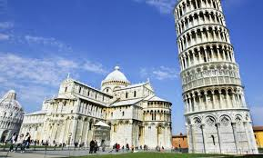
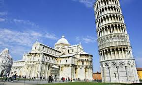

Viajando por el mundo


 


Catedral de Santa María del Fiore
La basílica catedral metropolitana de Santa María del Fiore, o catedral de Santa María de la Flor (en italiano, Cattedrale di Santa Maria del Fiore) es la sede episcopal (en italiano duomo) de la archidiócesis de Florencia, Italia. Es una de las obras maestras del arte gótico y del primer Renacimiento italiano. Símbolo de la riqueza y del poder de la capital toscana durante los siglos XIII y siglo XIV, la catedral florentina es uno de los edificios más grandes de la cristiandad. Su nombre se refiere al lirio, símbolo de Florencia, o al antiguo nombre del pueblo llamado Fiorenza. Pero, por otra parte, un documento del siglo XV afirma que la «flor» se refiere a Cristo. Destaca, de forma singular, la grandiosa cúpula, obra de Filippo Brunelleschi,1 una estructura isostática de 100 m de altura interior; 114,5 m de altura exterior; 45,5 m de diámetro exterior y 41 m de luz (diámetro interior) con la particularidad de que esta cúpula, en sí misma, anula los empujes horizontales para no transmitir al tambor que la sustenta prácticamente más cargas que las verticales correspondientes a su propio peso.2 A la cúpula hay que añadir el campanile de Giotto, un campanario independiente trazado por Giotto, de 84,70 m de altura, y el baptisterio de San Juan, con las famosas puertas de bronce de Ghiberti. El conjunto, formado por la iglesia, el campanario y el baptisterio, constituye una de las joyas artísticas y arquitectónicas de Florencia.
La catedral fue levantada en el espacio que ocupó la antigua iglesia de Santa Reparata, impulsada su construcción por la magnificencia de las nuevas catedrales de Pisa y Siena. Al final del siglo XIII, la iglesia de Sa nta Reparata, de nueve centurias se derrumbaba, como lo atestiguan los documentos. Más aún, resultaba demasiado pequeña en un período de rápido crecimiento de la población. La próspera Florencia quería sobrepasar la grandiosidad de sus rivales toscanos, Pisa y Siena, con una iglesia magnífica, más grandiosa en tamaño y adornada más ricamente en el exterior. Esta catedral, cuando se terminó, resultó ser la más grande de Europa, con una capacidad para 30.000 personas. En la actualidad sólo es superada, en tamaño, por la basílica de San Pedro en la Ciudad del Vaticano, la catedral de San Pablo en Londres, la catedral de Sevilla y la catedral de Milán.